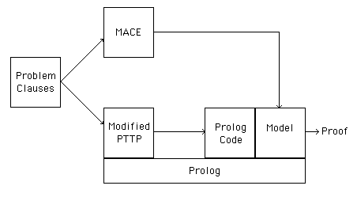

The PTTP+GLiDeS Implementation
- Software
- Modified version of PTTP 2e
- MACE v1.3.3
- Combined with a
csh script.

- Model Generation
- Initial domain size = number of constants
- No model => MACE search from domain size 2
- No model => PTTP+GLiDeS exits
- Clauses transformed into Prolog procedures
- Semantic checks performed on the A-list
- A-list must have an instance with all literals FALSE